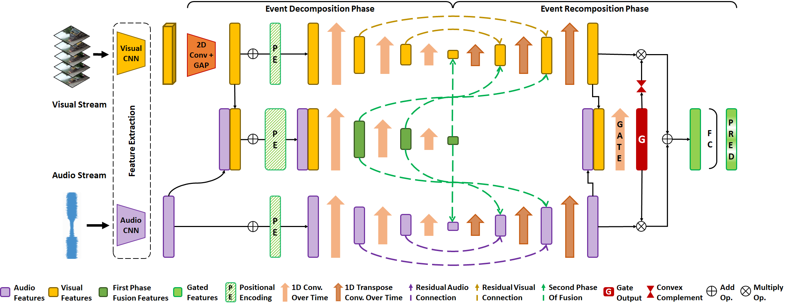
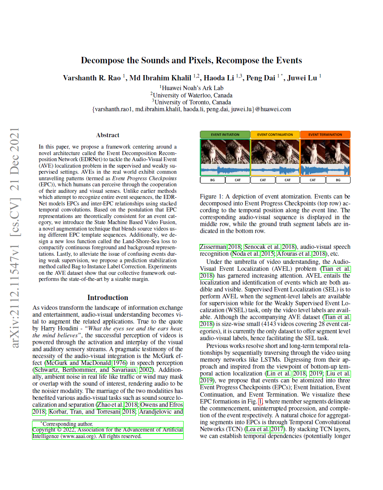

Decompose the Sounds and Pixels, Recompose the Events
| Varshanth Rao | Md Ibrahim Khalil | Haoda Li | Peng Dai* | Juwei Lu |
| Noah’s Ark Lab, Huawei Technologies Inc. Canada |
| *: corresponding author |
|  |
Overview of the EDRNet. Modality-wise localization features are forged and refined in two phases: the EDP and the ERP. The EDP summarizes the video into an event composition which the ERP leverages to effectively localize events in increasing temporal granularity. Consensus of the modalities is learned by a gating mechanism to yield the final audio-visual event localization predictions. |
Abstract
In this paper, we propose a framework centering around a novel architecture called the Event Decomposition Recomposition Network (EDRNet) to tackle the Audio-Visual Event (AVE)
localization problem in the supervised and weakly supervised settings. AVEs in the real world exhibit common unravelling patterns, termed as Event Progress Checkpoints (EPC),
which humans can perceive through the cooperation of their auditory and visual senses. Unlike earlier methods which attempt to recognize entire event sequences, the EDR-Net models EPCs and inter-EPC relationships using stacked temporal convolutions.
Based on the postulation that EPC representations are theoretically consistent for an event category, we introduce the State Machine Based Video Fusion, a novel augmentation technique that blends source videos using different EPC template sequences.
Additionally, we design a new loss function called the Land-Shore-Sea loss to compactify continuous foreground and background representations. Lastly, to alleviate the issue of confusing events during weak supervision,
we propose a prediction stabilization method called Bag to Instance Label Correction. Experiments on the AVE dataset show that our collective framework outperforms the state-of-the-art by a sizable margin.
Media coverage
Our work is featured in Noah's Ark official blog!
Paper
|  | "Decompose the Sounds and Pixels, Recompose the Events", Oral presentation |
Last updated: April 2022